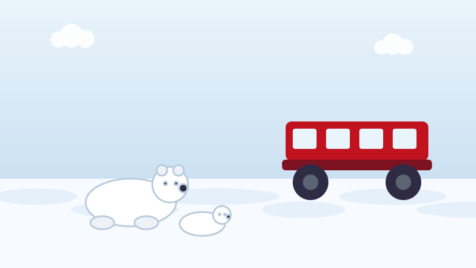

🐻❄️ Pour les enfants
La ville où les ours polaires marchent dans la rue
Il y a au Manitoba une ville où l'école fait des exercices en cas d'ours comme d'autres écoles font des exercices d'incendie.

Une ville où l'on ne peut pas aller en voiture
Churchill se trouve au bord de la baie d'Hudson, tout au nord du Manitoba. Environ 900 personnes y vivent.
Aucune route ne mène à Churchill. Aucune. On ne peut y aller en voiture depuis nulle part. On s'y rend en train, ce qui prend environ deux jours depuis Winnipeg, ou en avion, ce qui prend environ deux heures.
Tout ce dont la ville a besoin arrive par ce train ou cet avion. Les bananes, les vélos, les livres d'école, tout.
Pourquoi les ours viennent
Les ours polaires chassent le phoque, et ils le chassent sur la banquise. L'été, la glace fond : les ours doivent donc revenir à terre et attendre, en ne mangeant presque rien pendant des mois.
L'eau près de Churchill gèle plus tôt que le reste de la baie d'Hudson. Chaque automne, les ours s'y rassemblent donc, en attendant le retour de la glace.
De la mi-octobre à la mi-novembre, des centaines d'ours polaires se trouvent près de cette petite ville. Certaines années, ils approchent le millier.
Ils sont affamés et ils sont énormes. Un gros mâle peut peser autant que six adultes réunis.
Comment la ville reste en sécurité
Churchill a un programme d'alerte aux ours polaires. Des panneaux d'avertissement sont installés le long du rivage, et si quelqu'un voit un ours près de la ville, il compose un numéro spécial.
Des agents viennent endormir l'ours en toute sécurité pendant un moment. L'ours est ensuite emmené dans un bâtiment à la sortie de la ville, que tout le monde appelle la prison des ours polaires.
On n'y donne pas de nourriture aux ours. Cela semble cruel, mais ne l'est pas : à cette période de l'année, un ours polaire jeûne de toute façon naturellement, et le nourrir lui apprendrait que les humains veulent dire repas.
Quand la baie gèle enfin, les ours sont emmenés par hélicoptère et relâchés sur la glace, là où ils voulaient être depuis le début. Ce programme a remplacé ce qui se faisait avant : on abattait les ours qui approchaient de la ville.
Les observer comme il faut
Des gens viennent du monde entier pour voir les ours. Ils voyagent en buggys de la toundra, d'énormes véhicules dont les roues sont plus hautes qu'une personne, si bien que tout le monde est assis bien au-dessus du sol.
Il y a une inquiétude, et il vaut la peine de dire la vérité à ce sujet. Les scientifiques qui comptent les ours de l'ouest de la baie d'Hudson en trouvent moins qu'avant, parce que la glace fond maintenant plus tôt et gèle plus tard, ce qui signifie plus longtemps sans nourriture.
Des mots à connaître
- La toundra
- Une terre froide, plate et sans arbres du Grand Nord, où le sol reste gelé en dessous.
- Banquise
- De l'eau de mer gelée. Les ours polaires y marchent et y chassent.
- Endormir
- Donner à un animal un médicament qui l'endort en toute sécurité pendant un moment.
Essaie maintenant trois questions
Pas de chronomètre et aucune note à craindre. Chaque réponse t'explique pourquoi.
← Toutes les histoires pour enfants
À propos de ce quiz
Cette histoire parle de Churchill, au Manitoba : une ville sans route, où des centaines d'ours polaires se rassemblent chaque automne en attendant que la baie d'Hudson gèle, et comment la ville protège à la fois les gens et les ours.
Elle est écrite en phrases courtes pour les enfants de six à neuf ans, avec une image dessinée pour ce site et trois questions à la fin. Touchez le bouton de lecture à voix haute et la page lira les questions à haute voix.
À découvrir aussi
D'autres histoires vraies du Canada pour les enfants